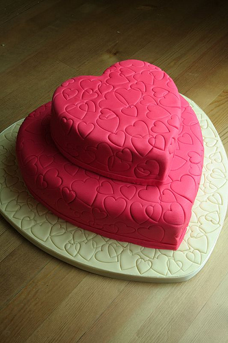

Strawberry Cake Recipe
Here's the recipe for the preparation of a strawberry cake. This recipe prepares the cake for 8 servings.
Ingredients
For Cake:
- 2 ¾ cups cake flour
- 2 ½ teaspoons baking powder
- 2 cups white sugar
- 1 (3 ounce) package strawberry flavored gelatin
- 1 cup butter, softened
- 4 eggs
- 1 cup milk
- 1 teaspoon vanilla extract
- ½ cup strawberries, pureed
- 1 ½ cups heavy cream
- 2 tablespoons sugar
- ½ teaspoon vanilla extract
- 1 ½ cups fresh strawberries, sliced
- ½ cup margarine, softened
- 1 (8 ounce) package cream cheese, softened
- 4 cups confectioners sugar
- 2 teaspoons vanilla extract
- 1 ½ cups quartered strawberries
Method of Preparation
- Preheat oven to 350° F (175° C). Grease and flour three 9 inch round cake pans.
- In a large bowl, beat sugar, gelatin and butter until fluffy. Add eggs one at a time, beating well with each addition. Mix flour and baking powder, and beat alternately with the milk into the sugar mixture. Fold in 1 teaspoon vanilla and pureed strawberries. Divide equally into three 9 inch round cake pans.
- Bake 25 minutes in the preheated oven, or until toothpick inserted into cake comes out clean. Cool for 10 minutes in the pans, then remove from pans and cool completely.
- To make the filling: Beat whipping cream, 2 tablespoons sugar and ½ teaspoon vanilla on high until stiff. Fill each layer with ⅓ of the whipped cream and ¾ cup sliced strawberries.
- To make the frosting: Beat the margarine, cream cheese, confectioners sugar, and vanilla until creamy. Spread over the sides of the cake, and pipe an edge of frosting around the top of the cake.
- Spread remaining whipped cream on cake top. Top with quartered strawberries.